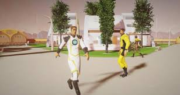
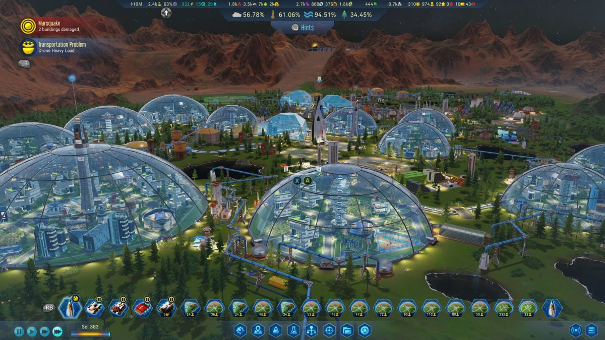

Surviving Mars egy városépítési szimulációs videojáték, amelyet eredetileg a bolgár Haemimont Games stúdió, később az Abstraction Games fejlesztett ki , és a Paradox Interactive adott ki . 2018. március 15-én jelent meg Microsoft Windows , macOS , Linux , PlayStation 4 és Xbox One rendszereken. A játékos felügyelőként szolgál, akinek kolóniát kell építenie a Marson , és biztosítania kell a telepesek túlélését .
Játékmenet
A Surviving Mars egy városépítő szimulációs játék, amely a Marson játszódik, és valódi marsi adatok alapján készült. A játékos kiválaszt egy szponzoráló nemzetet, amelyek mindegyike némileg eltérő előnyöket, valamint egyedi épületet és járművet biztosít, majd robotdrónokkal és roverekkel landol a Marson. Ezek a roverek és drónok felkészítik a kolóniát a vörös bolygón élő emberek számára az energia- és vízinfrastruktúra, kupolák, erőforrás-raktárak, oxigéngenerátorok és leszállópályák felállításával. A játékos célja, hogy virágzó kolóniát hozzon létre a Marson, időnként a Földről érkező rakétákkal, amelyeknek korlátozott rakomány- vagy utasterük van, és arra kényszeríti a játékost, hogy egyensúlyt fizessen a Földről származó erőforrások importja és a bolygó erőforrásainak előállítása között. Például az első emberi gyarmatosítók korlátozott mennyiségű élelmet visznek magukkal a rakétájukon, így a farmok kulcsfontosságúak egy virágzó marsi kolónia szempontjából.
A játékos elhozhat a Földről elektronikát, gépalkatrészeket, élelmiszert, betont, fémet, előregyártott (előre gyártott) épületeket, rovereket és drónokat, vagy kutatási technológiákat ezek gyártásához a Marson. Miután sikeresen létrehozták és kezelték az alapvető erőforrásokat a Marson, a játékosoknak lehetőségük nyílik az emberi életre és a fejlett erőforrások előállítására alkalmas kupolák építésével továbblépni. A játékosoknak egyensúlyban kell tartaniuk a kolónia bővítését az oxigén, az élelmiszer, a víz, az elektromosság és a cserealkatrészek kezelésével, miközben a kutatások révén a feloldó technológiákon kell haladniuk. Az 5 kutatási területen (fizika, mérnöki tudomány, társadalom, biotechnológia, robotika) a játékosok olyan technológiákat nyithatnak meg, amelyek végül különböző csodákhoz vezetik őket. A játékban rejtélyeknek nevezett történetek is vannak, amelyek különféle eseményekkel gazdagítják a kolóniát, beleértve a járványokat, a háborút, a rivális vállalatokat, a mesterséges intelligencia lázadását, az idegenekkel való érintkezést és másokat. A ritka fémeket pénzért vissza lehet exportálni a Földre. A leszállóhelyeken különféle természeti katasztrófák is előfordulnak, például porviharok, meteorviharok, hideghullámok és porördögök a nehézségek növelése érdekében.
